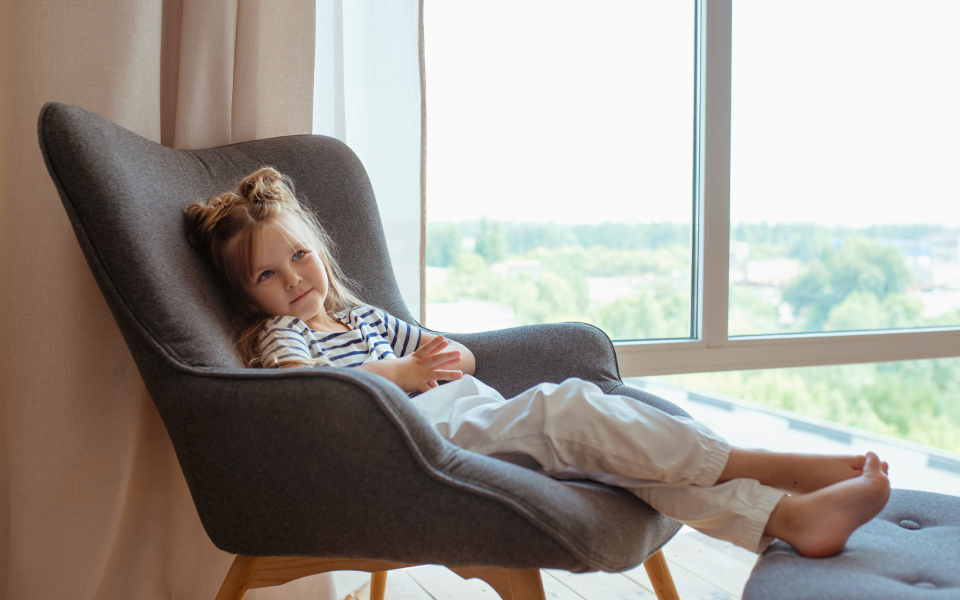
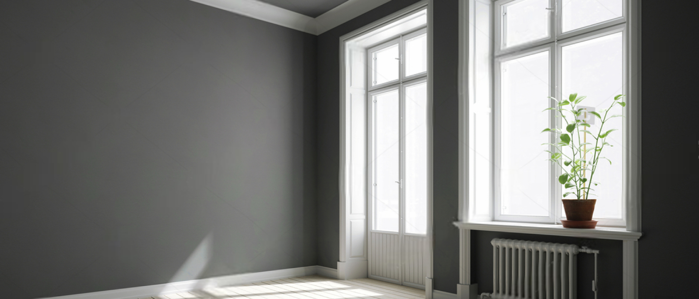
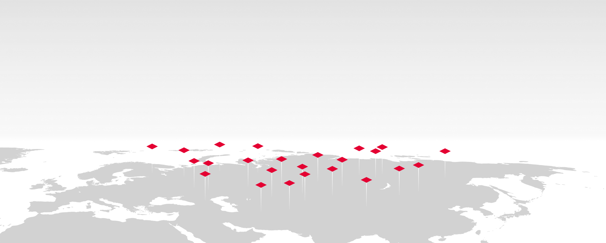
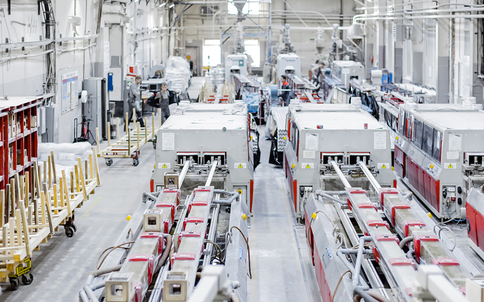
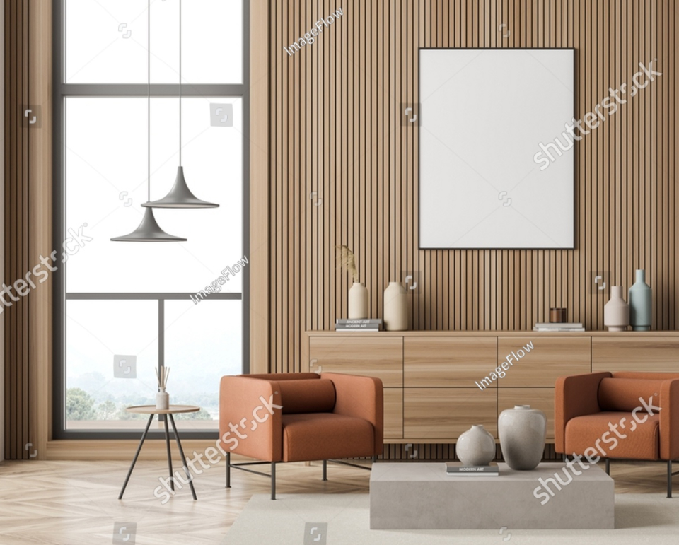

Качественные окна
на любой вкус
Покупайте у дилера со сроком эксплуатации 60 лет
Качественные окна
на любой вкус (вариант 2)
Преимущества
Долговечность
Профиль BRUSBOX ежегодно проходит испытания в лаборатории контроля качества. Ему не страшна коррозия, гниение, атмосферные осадки, жара, холод и перепады температуры от -50С до +50С. При правильном монтаже окна прослужат максимальный срок службы без каких-либо проблем и нареканий. А гарантия на сам профиль, основу окна, составляет 60 лет!


Продукция
Пластиковые окна
Пластиковые двери
Подоконники
Балконы и лоджии

Где купить
Компания Brusbox работает на всей территории России. Мы продаем качественный профиль лучшим производителям окон. Для нас важно, чтобы профиль Brusbox использовали добросовестные компании, которые изготавливают окна качественно, обеспечивают профессиональный монтаж и получают положительные отзывы покупателей. Если вы не знаете, где заказывать окна в Москве, ознакомьтесь со списком наших партнеров в вашем городе и вызовите мастера на замер.
О компании
Компания «БРУСБОКС» — один из крупнейших производителей ПВХ профиля и подоконной доски в России, основана в марте 2004 года.
На сегодняшний день производственная база компании «БРУСБОКС» расположена в г. Брянске и составляет 50 000 м², площадь производственных помещений — 10 000 м², 28 экструзионных линий фирмы KraussMaffei Technologies GmbH.
BRUSBOX — это принципиально новая разработка — качественный профиль ПВХ, созданный в России и для России на основе уникального комплекса передовых техно-логий и собственного практического опыта производства металлопластиковых окон.

Отечественный производитель окон BRUSBOX изготавливает ПВХ профили, которые строго соответствуют как европейским, так и отечественным стандартам качества. Окна могут устанавливаться в квартирах, коттеджах, дачных домах, на производствах, в офисах, других коммерческих помещениях, в учреждениях с повышенными санитарными и гигиеническими требованиями. Компания работает на рынке 18 лет, производя технологичный профиль из поливинилхлорида, разработанный в России. Он создан с применением новейших технологий и практического опыта производства.
Разновидности остекления в компании BRUSBOX
На выбор представлено 96 видов цветной пленки для ламинирования ПВХ. Покрытие дополнительно защищает пластик:
• от ультрафиолетовых лучей;
• механических повреждений;
• загрязнений.
Пленка может монтироваться с наружной и внутренней стороны. Наружное ламинирование подбирается под цвет фасада. Внутреннее под дизайн интерьера.
Окна представлены трехкамерными, четырехкамерными, пятикамерными и шестикамерными системами. 3 камеры — простое и надежное изделие. Оно подходит для производства основных типов окон. Изделие оснащено наружными и внутренними предкамерами, хорошо сопротивляющимися теплопередаче.
Четырехкамерные модификации могут использоваться в разных климатических условиях. Они монтируются в элитных коттеджах и панельных домах. Они универсальные.
Пятикамерные модели отличаются увеличенной монтажной глубиной коробки. Это изделия с повышенными шумо- и теплоизоляционными характеристиками.
Шестикамерные системы — новая разработка в области энергосберегающих профилей. Важные особенности модели — увеличенная монтажная глубина и шесть камер, что обеспечивает великолепные шумо- и теплоизоляционные характеристики.
• от ультрафиолетовых лучей;
• механических повреждений;
• загрязнений.
Пленка может монтироваться с наружной и внутренней стороны. Наружное ламинирование подбирается под цвет фасада. Внутреннее под дизайн интерьера.
Окна представлены трехкамерными, четырехкамерными, пятикамерными и шестикамерными системами. 3 камеры — простое и надежное изделие. Оно подходит для производства основных типов окон. Изделие оснащено наружными и внутренними предкамерами, хорошо сопротивляющимися теплопередаче.
Четырехкамерные модификации могут использоваться в разных климатических условиях. Они монтируются в элитных коттеджах и панельных домах. Они универсальные.
Пятикамерные модели отличаются увеличенной монтажной глубиной коробки. Это изделия с повышенными шумо- и теплоизоляционными характеристиками.
Шестикамерные системы — новая разработка в области энергосберегающих профилей. Важные особенности модели — увеличенная монтажная глубина и шесть камер, что обеспечивает великолепные шумо- и теплоизоляционные характеристики.

Оконные системы BRUSBOX («БРУСБОКС»)
Евроокна, которые представляет официальный сайт окон «БРУСБОКС» отличаются друг от друга по количеству камер, размеру профиля, конфигурации, моделям установленной фурнитуры. Каждый экземпляр, среди предложенных, может использоваться для частной или коммерческой эксплуатации.
ACLASS
Подходит для производства изделий любых форм. Имеет высокие коэффициенты теплопередачи благодаря большой толщине стенки. ACLASS подходит для жилищного фонда, остекления объектов промышленного назначения, расположенных в регионе со сложными климатическими условиями.
60-4
Модификация универсальная, недорогая. Подходит как для южных, так и для северных регионов. Евроокна, созданные на основе системы 60-4, могут устанавливаться в элитных домах, панельных многоэтажках. Имеет четыре внутренние камеры, славится высокими показателями сопротивления теплопередачи.
70-6
Модель отличается улучшенными показателями качества. Это новая разработка компании, отличающаяся увеличенной монтажной глубиной коробки. Большая толщина конструкции позволяет использовать шестикамерную систему для максимального сохранения тепла. Профиль используется в регионах с холодным климатом.
AERO
Востребованная модель, использующаяся в частном и корпоративном строительстве. Модификация соответствует строгим стандартам качества как отечественных, так и зарубежных.
SUPER AERO — улучшенная модель.
Это пятикамерная конструкция с монтажной глубиной 70 мм. Отличается высокими показателями энергоэффективности.
GLIDE — разумное количество.
Оригинальная раздвижная конструкция. Используется для остекления балконов и лоджий, хорошо совмещается с другими системами 60 мм.
Официальный сайт BRUSBOX(«БРУСБОКС»):
наши услуги и сервис
наши услуги и сервис
Производим высококачественные профили ПВХ для создания энергоэффективных окон в любых размерах и конфигурациях с высокими показателями прочности, практичности, долговечности. Проводим монтаж, оказываем гарантийное и постгарантийное обслуживание.
Преимущества сотрудничества
«БРУСБОКС» — официальный производитель ПВХ профилей, соответствующих ГОСТам. Наши окна конкурируют с европейскими аналогами, представленными в Москве и других городах РФ. Предлагаем официальные цены без посреднической наценки.